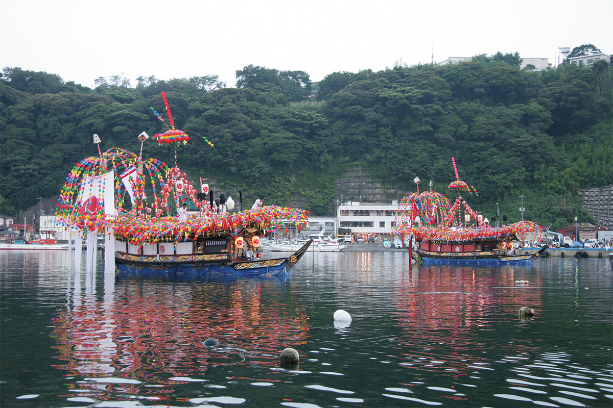
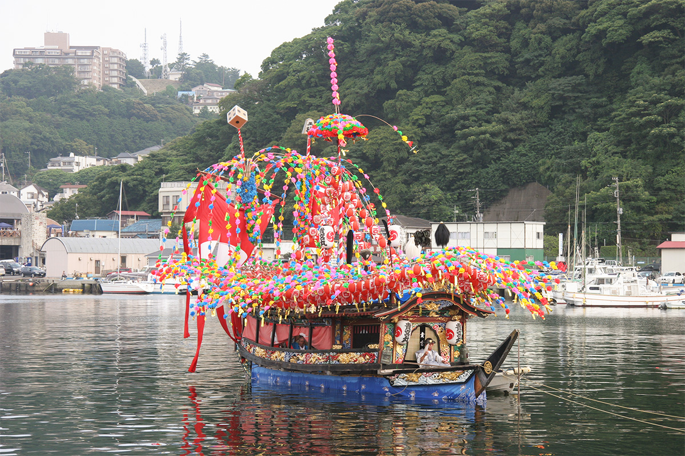
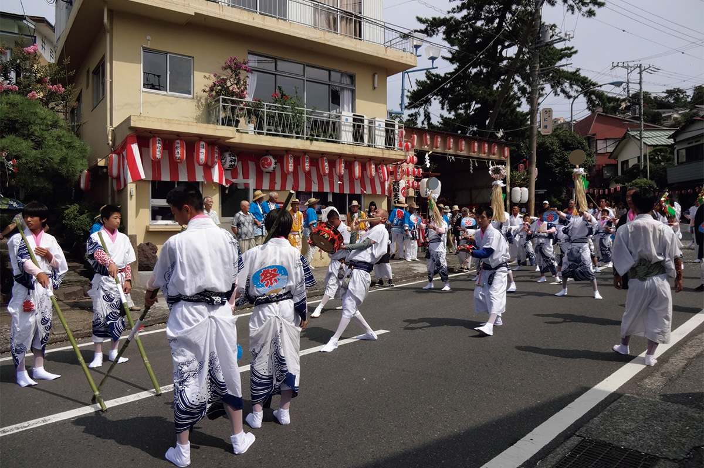

Префектура Канагава · Манадзуру · праздник
«Кибунэ мацури» в Манадзуру: летний праздник, где микоси плывут по морю

Летом по всей Японии проходят праздники, в которых люди просят о богатом урожае и о защите от болезней и бед. В Манадзуру, старом рыбацком городке на берегу залива Сагами, молятся о богатом улове и спокойном море: здесь микоси переправляют через гавань на лодках.
Праздник
Один из трёх великих праздников на лодках
Святилище Кибунэ стоит на полуострове Манадзуру, в западной части префектуры Канагава. Его главный ежегодный праздник, «Кибунэ мацури», причисляют к трём великим праздникам на лодках в Японии. Манадзуру издавна живёт рыбной ловлей, и в этом празднике люди молятся о большом улове и о безопасности на море.
Главное зрелище праздника это переправа по морю. Микоси, переносное святилище с божеством, ставят на лодку, и её ведут через гавань суда, украшенные пёстрыми цветами и бумажными фонарями.

Есть у праздника и другие моменты, где чувствуется крутой нрав рыбацкого города. Во время «мисоги», обряда очищения, носильщики заходят с микоси прямо в море. А потом микоси поднимают к святилищу по лестнице из 108 ступеней, и от этого подъёма зрителям трудно оторвать глаза.
Танец
«Касима одори»: с него всё начинается
Вторая яркая часть праздника это танец «Касима одори». Его исполняют как подношение богам в нескольких местах, в том числе перед святилищем. Этот танец просит не только о богатом улове и спокойном море: он ещё и отгоняет болезни. В городе говорят, что «Кибунэ мацури» начинается с «Касима одори» и им же заканчивается.

Праздник длится два дня в конце июля. В 2026 году он прошёл 24 и 25 июля. По сайту святилища, для праздника выбирают пятницу и субботу в конце июля, так что дату следующего года лучше уточнить там же.
«Кибунэ мацури»
- Даты
- 24–25 июля 2026 года; ежегодно в пятницу и субботу в конце июля
- Адрес
- префектура Канагава, уезд Асигарасимо, Манадзуру, Манадзуру, 1117 (святилище Кибунэ) и улицы города
- Телефон
- +81 465-68-0066 (святилище Кибунэ)
- Сайт
- kibunejinja.com
Фото: святилище Кибунэ.